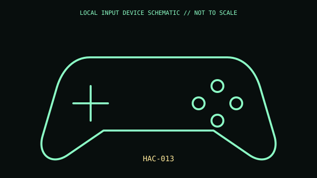

[ GAME CONTROLLERS // IDENTIFIED COMPONENT ]
Nintendo Switch Pro Controller
Wireless console gamepad with motion input, HD Rumble, and amiibo NFC support.

MODEL IDENTIFICATION: HAC-013. Confirm the printed SKU, revision, bundle, region, and supplied accessories before repair or compatibility claims.
Model specifications
| Catalog leaf | Game controllers |
|---|---|
| Exact model / identifier | HAC-013 |
| Physical mechanism and primary specifications | Bluetooth wireless; USB-C charging/data; rechargeable battery; motion sensors and NFC touchpoint; Nintendo rates about 40-hour battery life under test conditions. |
| Compatibility and interface caveats | PC Bluetooth/USB behavior is not guaranteed feature parity. Motion, NFC, and rumble require compatible host/software. |
| Revision identification | Record complete product label, revision, region, and accessories. Similar family names may differ in protocol, connector, feature set, and host requirements. |
Preservation and service
Use suitable USB supply, inspect USB-C and sticks, and do not open the lithium battery enclosure.
Record observed condition, accessories, host OS, driver/app version, and test conditions separately from vendor specifications.
Primary manufacturer sources
- Nintendo Switch Pro ControllerManufacturer documentation; verify exact PID and regional/revision markings against the physical unit.
- Nintendo Pro Controller supportManufacturer documentation; verify exact PID and regional/revision markings against the physical unit.
Retain the applicable manual with the equipment record; manufacturer support pages and software availability may change.